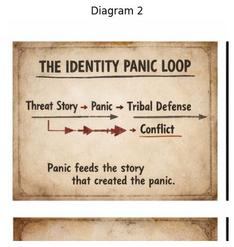

Threat Story → Panic → Tribal Defense → Conflict → New Threat Story

This diagram shows how identity panic sustains itself.
Unlike the first diagram (which showed the economics of outrage), this one shows the psychological loop inside people and groups.
Think of it like a feedback loop in a microphone. 🎤
A sound enters the system, the amplifier boosts it, the microphone hears the amplified sound again, and it grows louder and louder.
Identity panic works the same way.
Everything begins with a narrative of danger.
Not necessarily a lie. Often it’s a selective story that highlights threat and ignores context.
Examples:
Stories matter because humans interpret the world through narratives, not raw data.
The story frames reality before people even evaluate it.
Once the threat story lands, it activates emotional alarm.
Panic is a biological response:
Under panic, people seek certainty and protection.
This is where rational analysis starts shrinking.
Now identity becomes the organizing force.
People instinctively move toward:
The tribe offers safety, belonging, and explanation.
But it also sharpens division:
If my tribe must survive, someone else must be the threat.
Once tribes mobilize defensively, conflict becomes almost inevitable.
Conflict can take many forms:
And here is the crucial part.
Conflict itself becomes new evidence that the threat story was correct.
This is why the diagram shows arrows looping back.
Conflict produces:
Those become new threat stories.
Threat Story → Panic → Tribal Defense → Conflict → New Threat Story
Each rotation intensifies the emotions.
“Panic feeds the story that created the panic.”
This means the system becomes self-confirming.
People interpret every event through the lens of the threat narrative.
Even neutral events can be seen as proof that the threat is real.
Modern media environments accelerate the loop because:
So the psychological loop and the attention economy reinforce each other.
Identity Panic Toolkit focuses on interrupting this loop.
If a person can pause between Threat Story and Panic, the cycle weakens.
Awareness introduces a new path:
Threat Story → Observation → Perspective → Calm Response
The loop stops feeding itself.
In a way, this diagram describes the storm inside people, while the first diagram described the storm inside the media system.
And when those two storms interact, outrage culture grows very quickly.
But the moment someone notices the loop, the cycle starts losing its grip.